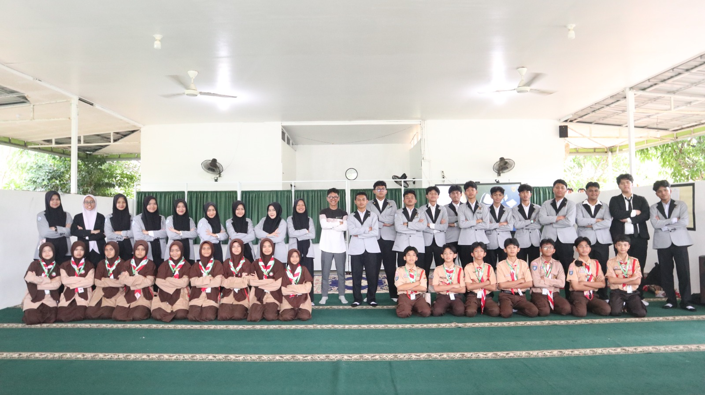

ULIL ALBAB GOES TO SCHOOL

Batam – Pada hari Rabu, 12 Mei 2026, BEST (Badan Eksekutif Siswa Terpadu) SMAIT Ulil Albab Batam melakukan kunjungan studi banding di SMPIT Alam Mutiara Insani Batam. Kegiatan yang biasa disebut UAGTS (Ulil Albab Goes To School) ini merupakan proker unggulan dari KEMENDIKBUD yang diselenggarakan dua tahun sekali.
Kedatangan rombongan BEST disambut hangat oleh OSIS SAMI saat memasuki area sekolah yang asri dan ditanami berbagai macam tumbuhan. Acara kemudian dibuka oleh MC dari OSIS SAMI di hadapan siswa-siswi SMPIT Alam Mutiara Insani yang sangat antusias.
Materi pertama mengenai manajemen waktu dibawakan oleh Kak Namira dan Kak Zee, menyoroti pentingnya membagi waktu secara efektif antara belajar, berorganisasi, dan hobi di masa remaja. Selanjutnya, Kak Ara dan Kak Fakhri memberikan materi pengenalan lingkungan SMAIT Ulil Albab Batam, mencakup program boarding, organisasi, serta berbagai komunitas.
Antusiasme dan rasa penasaran peserta semakin terlihat pada sesi tanya jawab dan kuis. Meski awalnya ragu, siswa-siswi perlahan memberanikan diri untuk bertanya dan menjawab pertanyaan dari Kak Naura dan Kak Darrel. Selain itu, BEST dan OSIS SAMI juga mengadakan sesi diskusi khusus untuk saling bertukar pendapat dan pengalaman seputar keorganisasian.
Di akhir waktu kunjungan, terdapat waktu bebas yang dimanfaatkan untuk mengobrol santai bersama sesama siswa maupun ustadz/ah. Momen ini juga menjadi ajang nostalgia, mengingat beberapa anggota BEST yang hadir merupakan alumni dari SMPIT Alam Mutiara Insani.
Melalui studi banding ini, besar harapan untuk menjalin hubungan yang erat dan harmonis, serta membuka peluang kolaborasi antar sekolah untuk saling membantu di masa depan.